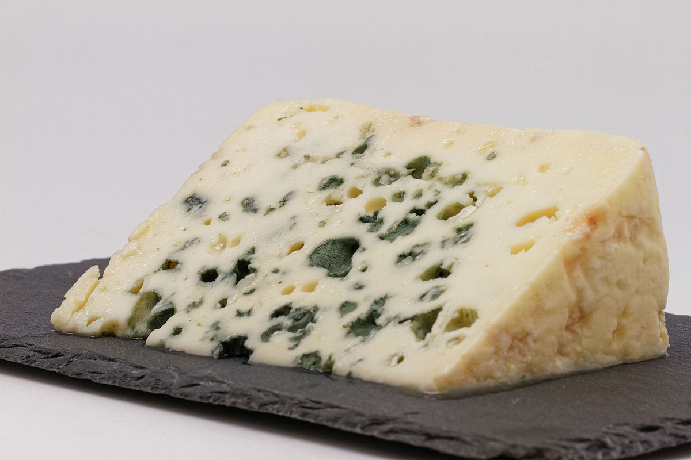
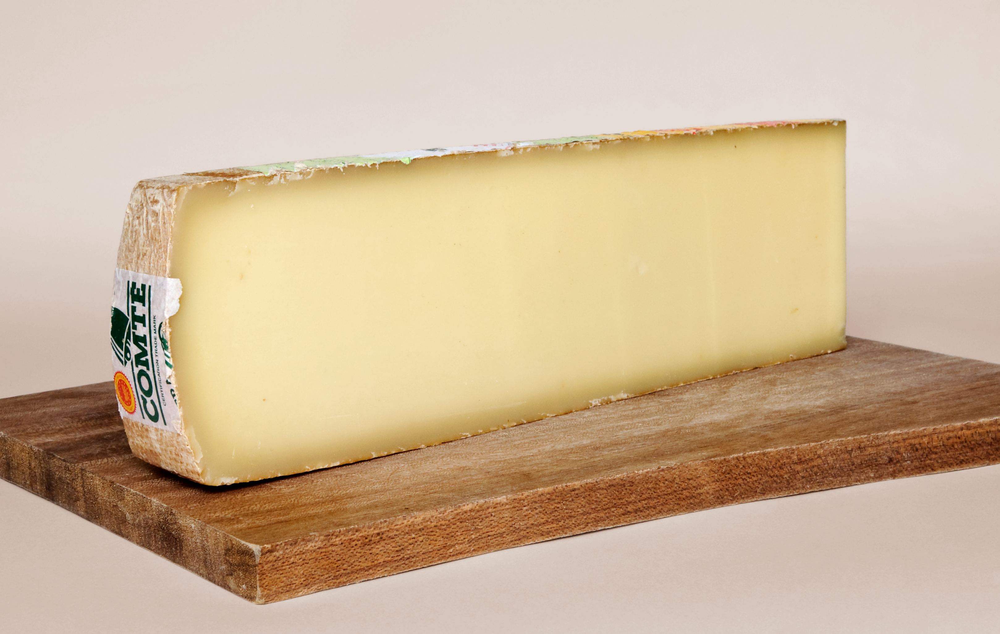
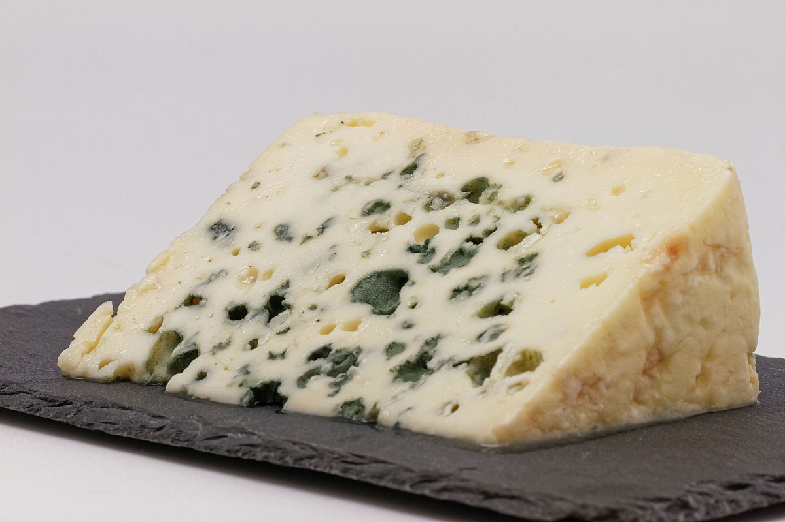
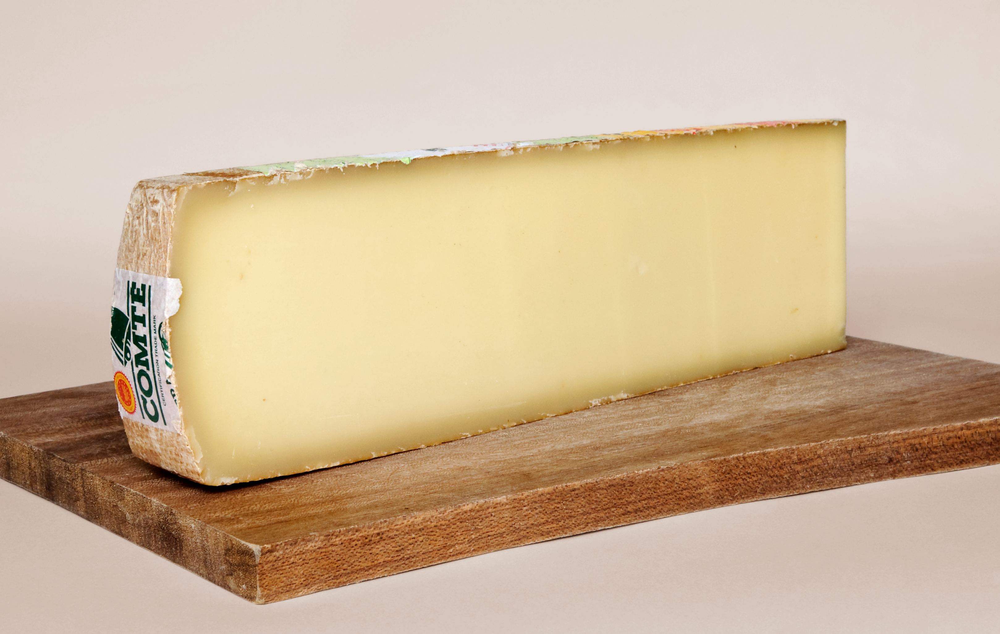

Cele mai cunoscute branzeturi frantuzesti
- Brie
- Camembert
- Roquefort
- Comté
- Gruyère
- Emmental
- Chèvre
- Morbier
- Reblochon
- Beaufort
- Maroilles
Cateva cuvinte despre gastronomia branzeturilor
Brânza franceză are o istorie bogată și îndelungată. Primele referințe despre producția de brânză în Franța datează încă din perioada romană. De-a lungul secolelor, brânza franceză a devenit celebră pentru varietatea sa și pentru calitatea excepțională.
Astăzi, brânza franceză continuă să fie apreciată în întreaga lume pentru diversitatea sa și pentru gusturile unice. Franța este cunoscută ca fiind țara cu cel mai mare număr de tipuri de brânză recunoscute oficial.

 


